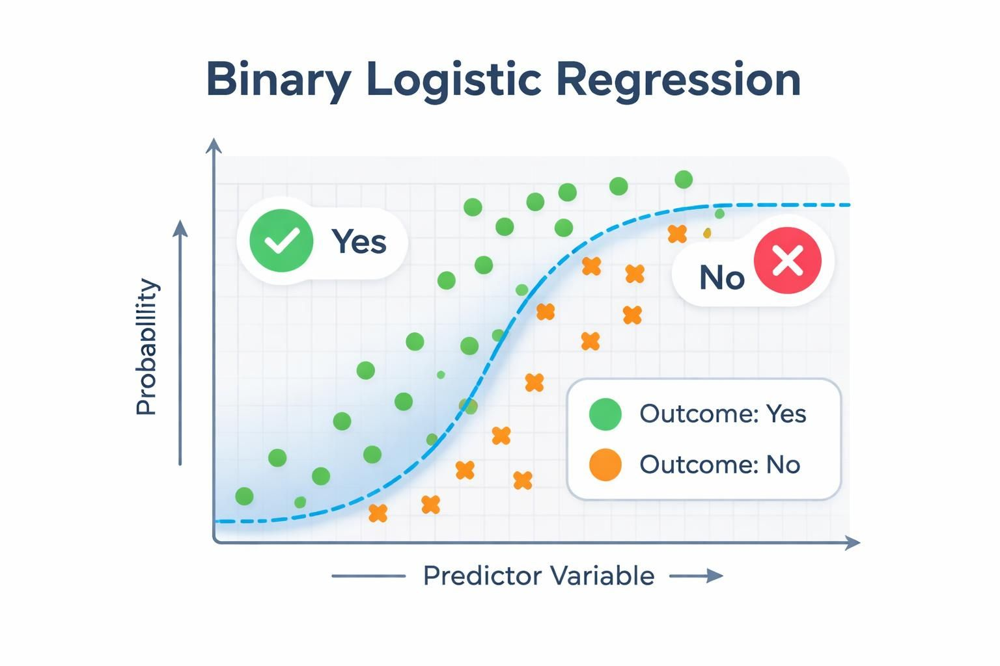
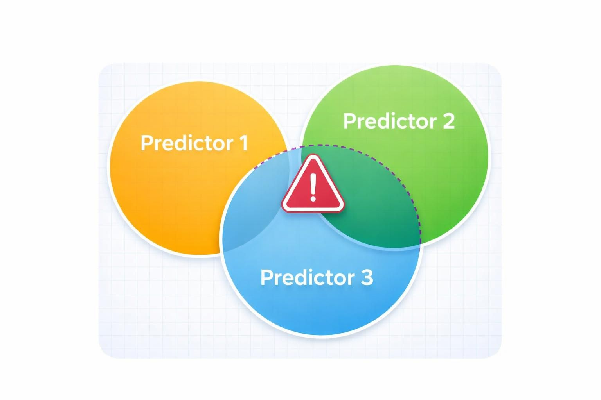
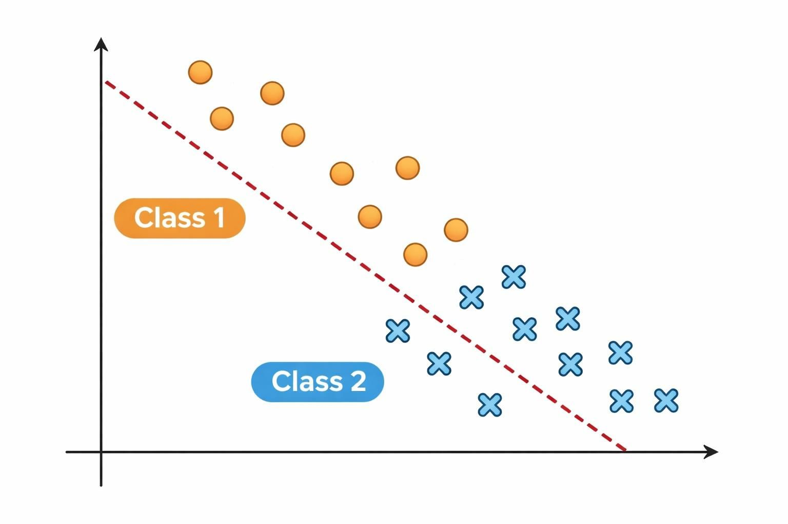
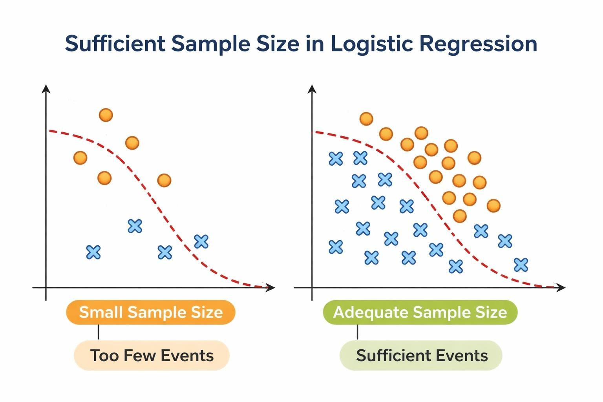
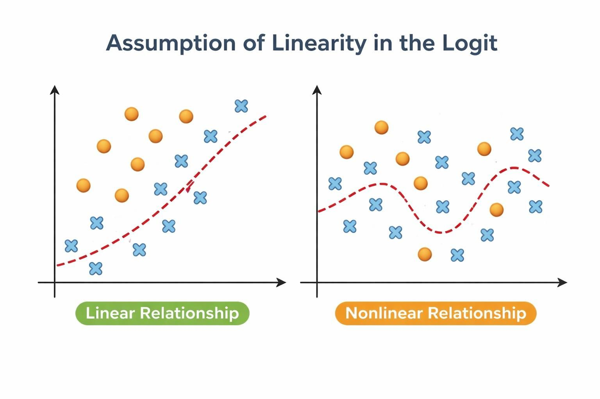

Overview
Odds ratio models rely on several statistical assumptions to produce valid and reliable estimates. The check_or() function helps you verify that your data and model meet these assumptions before you present results. This article explains what these checks do, why they matter and how to interpret the results.
Why assumption checks matter
Statistical models make assumptions about your data. When these assumptions are violated, your confidence intervals may be too narrow, your p-values misleading or your odds ratio estimates biased. Running assumption checks early catches these problems before you invest time in interpretation or publication.
The check_or() function performs several diagnostic checks automatically, flagging potential issues so you can address them before proceeding to plot_or() or table_or(). In fact, unless you specify otherwise, your model is checked for these assumptions when you run plot_or() and table_or() to provide additional levels of protection.
What check_or() checks
Binary outcome

What it checks
Confirms the response variable has exactly two distinct levels and is coded as a factor variable.
Why it matters
Logistic regression requires a binary outcome - a response variable with exactly two categories. If your outcome has more than two levels, the model fundamentally cannot estimate the probability of a single event occurring; instead, you would need multinomial logistic regression (for unordered categories) or ordinal logistic regression (for ordered categories).
Additionally, logistic regression assumes the outcome is categorical rather than continuous. By enforcing a factor-coded binary outcome, the check ensures your data structure matches the statistical requirements of the model and that the package can correctly interpret which category represents the event of interest.
What to watch for
If this check fails when you call check_or(), you’ll see a message indicating the outcome variable is not binary. If detected by plot_or() or table_or(), the function will abort with a {cli} warning.
Stop and reconsider your model specification: verify that your outcome variable truly represents a binary choice (yes / no, success / failure, event / no event), check for unexpected missing values coded as a separate category and ensure the variable is coded as a factor.
If your outcome legitimately has more than two categories, you’ll need to either collapse categories into a binary outcome or switch to a different regression approach.
Multicollinearity

What it checks
Computes variance inflation factors (VIF) for numeric predictors or generalised VIF (GVIF) for factor predictors to assess whether predictor variables are highly correlated with one another.
Why it matters
High multicollinearity - when predictors are strongly correlated - destabilises coefficient estimates and inflates standard errors.
This makes your odds ratio estimates unreliable and widens confidence intervals, reducing statistical power and making it difficult to determine which predictors truly matter. In severe cases, multicollinearity can even flip the sign of a coefficient, leading you to incorrect conclusions about the direction of an effect.
Thresholds
The diagnostic flags predictors exceeding these thresholds:
VIF ≥ 5 (numeric predictors): indicates problematic collinearity
GVIF ≥ 2 (factor predictors): indicates problematic collinearity
Note on thresholds
The VIF ≥ 5 threshold is a common rule of thumb; some analysts use stricter thresholds (e.g., 3) depending on their field and tolerance for collinearity.
What to watch for
If this check fails when you call check_or(), you’ll see flagged predictors listed in the output. If detected by plot_or() or table_or(), the requested output is still produced, but a {cli} console warning alerts you to the issue.
When flagged, use the {car} package to inspect VIF / GVIF values for your model and identify which predictors are driving the problem:
# generate synthetic data with multicollinearity
n <- 200
predictor1 <- rnorm(n, mean = 50, sd = 10)
predictor2 <- rnorm(n, mean = 100, sd = 15)
# create predictor3 as correlated with predictor2
predictor3 <- predictor2 + rnorm(n, mean = 0, sd = 5)
# create a binary outcome with relationships to predictors
linear_predictor <- -2 +
0.05 * predictor1 +
0.02 * predictor2 +
0.01 * predictor3
prob <- plogis(linear_predictor)
outcome <- rbinom(n, size = 1, prob = prob)
# combine to a data frame
df <- data.frame(outcome, predictor1, predictor2, predictor3)
# fit a logistic regression model
lr <- stats::glm(
formula = outcome ~ predictor1 + predictor2 + predictor3,
family = binomial,
data = df
)
# calculate VIF values
car::vif(lr)
#> predictor1 predictor2 predictor3
#> 1.018118 7.812057 7.857104In this example, predictor2 and predictor3 both exceed the VIF threshold of 5, indicating problematic collinearity between them. This makes sense because predictor3 was created directly from predictor2 with only small random noise added.
You should investigate whether both predictors are truly necessary for your research question, or whether one is redundant. Consider removing one of the correlated variables, combining them into a composite measure or using regularisation techniques such as ridge or lasso regression.
Be cautious about simply dropping variables - ensure your decision is theoretically justified and doesn’t compromise your research question.
Separation

What it checks
Tests for complete or quasi-complete separation in the data, where a predictor perfectly or nearly perfectly predicts the outcome.
Why it matters
Separation occurs when one or more predictors have little to no overlap between outcome categories - for example, when all observations with a particular predictor value belong to a single outcome category. This causes coefficient estimates to become infinite or unstable, making standard errors unreliable and inference impossible.
Even quasi-complete separation (where overlap is minimal but not zero) can produce severely inflated standard errors and biased odds ratio estimates, leading to misleading conclusions about predictor effects.
Detection modes
The package offers two detection strategies depending on your needs:
Fast detection (when
confint_fast_estimate = TRUE): performs quicker checks by examining numeric predictors for non-overlapping ranges between outcome classes and categorical predictors for factor levels that appear in only one outcome class. This approach is faster but detects only complete separation.Robust detection (when
confint_fast_estimate = FALSE, the default): uses {detectseparation} package to identify models with infinite maximum likelihood estimates. This approach is slower but catches both complete and quasi-complete separation patterns that faster methods might miss.
Use fast detection if you have a large dataset and need quick feedback during exploratory analysis. Use robust detection (the default) for final models or when you suspect quasi-complete separation, as it’s more thorough.
What to watch for
If this check fails when you call check_or(), you’ll receive a warning identifying which predictor variables are associated with separation, along with a message that odds ratio estimates are likely to be unreliable. If detected by plot_or() or table_or(), the requested output is still produced, but a {cli} console warning alerts you to the issue.
The presence of a separation warning is not prescriptive - it should prompt you to investigate your model further and satisfy yourself that it is appropriate for your data. Here’s how you can explore your data to understand the separation:
# generate synthetic data with separation
n <- 200
# create a numeric predictor with separation
numeric_pred <- rnorm(n, mean = 50, sd = 10)
# create a categorical predictor with separation
cat_pred <- factor(c(rep("A", 100), rep("B", 100)))
# create an outcome with complete separation on
# numeric_pred (all values > 60 result in outcome = 1)
outcome <- ifelse(numeric_pred > 60, 1, 0)
# combine to a data frame
df <- data.frame(outcome, numeric_pred, cat_pred)
# fit the model
lr <- stats::glm(
formula = outcome ~ numeric_pred + cat_pred,
family = binomial,
data = df
)
#> Warning: glm.fit: algorithm did not converge
#> Warning: glm.fit: fitted probabilities numerically 0 or 1 occurred
# explore numeric predictors:
# check for non-overlapping ranges
num_sum <-
df |>
dplyr::summarise(
min = min(numeric_pred),
max = max(numeric_pred),
.by = outcome
)
num_sum
#> outcome min max
#> 1 0 24.92082 59.90262
#> 2 1 60.12834 76.91714
# explore categorical predictors:
# check for empty cells
cat_sum <-
df |>
dplyr::count(outcome, cat_pred)
cat_sum
#> outcome cat_pred n
#> 1 0 A 86
#> 2 0 B 80
#> 3 1 A 14
#> 4 1 B 20In this example, the warnings from glm.fit are the first sign of issues with this model, advising that fitted probabilities numerically 0 or 1 occurred. Examining the model further reveals numeric_pred shows clear separation:
outcome = 0 ranges from 24.9 to 59.9,
while outcome = 1 ranges from 60.1 to 76.9
there is no overlap between the ranges for outcome = 0 and outcome = 1
Once you’ve identified the separating predictor(s), consider the following remedies:
remove the separating predictor if it is not central to your research question,
combine rare categories within factor predictors to increase overlap with both outcome levels,
use Firth’s penalised likelihood via the {logisf} package, which stabilises estimates even in the presence of separation. Choose the approach that best balances your analytical goals with the practical constraints of your data.
Sample size sufficiency

What it checks
Applies the rule of thumb that binary logistic regression requires at least 10 outcome events per estimated parameter (including the intercept and all dummy variables created for factor levels).
Why it matters
Insufficient sample size relative to the number of parameters leads to unstable coefficient estimates, inflated standard errors, overfitting, reduced statistical power and unreliable confidence intervals.
Maximum likelihood estimation - the foundation of logistic regression - requires sufficient observations to provide reliable parameter estimates. When events are sparse relative to the number of predictors, the model may converge to unstable solutions that don’t generalise well to new data.
How the check works
The check performs two assessments:
Overall model sample size: counts the number of outcome events and non-events, then compares the smaller of these two against the threshold (10 x number of predictors).
Categorical predictor levels: for each factor predictor, ensures that every level has at least 10 event and 10 non-events.
What to watch for
If this check fails when you call check_or(), you’ll receive a warning indicating whether the issue is with overall sample size or with specific categorical predictor levels. If detected by plot_or() or table_or(), the requested output is still produced, but a {cli} console warning alerts you to the issue.
The presence of a sample size warning is not prescriptive - it should prompt you to investigate your model and data further. Here’s how you can explore your sample size:
# generate synthetic data with insufficient sample size
n <- 50
predictor1 <- rnorm(n, mean = 50, sd = 10)
predictor2 <- factor(rep(c("A", "B", "C", "D"), length.out = n))
predictor3 <- factor(rep(c("X", "Y"), length.out = n))
# create outcome with few events
outcome <- rbinom(n, size = 1, prob = 0.2)
# compile to a data frame
df <- data.frame(outcome, predictor1, predictor2, predictor3)
# fit model
lr <- stats::glm(
formula = outcome ~ predictor1 + predictor2 + predictor3,
family = binomial,
data = df
)
# check overall eents and non-events
events <- df |> dplyr::count(outcome)
events
#> outcome n
#> 1 0 43
#> 2 1 7
# check events per level of categorical predictors
events_per_cat <- df |> dplyr::count(predictor2, outcome)
events_per_cat
#> predictor2 outcome n
#> 1 A 0 12
#> 2 A 1 1
#> 3 B 0 10
#> 4 B 1 3
#> 5 C 0 10
#> 6 C 1 2
#> 7 D 0 11
#> 8 D 1 1Parameters in the model:
predictor1(numeric): 1 parameterpredictor2(4 levels): 3 dummy variablespredictor3(2 levels): 1 dummy variableIntercept: 1 parameter
Total: 6 parameters
With 6 parameters, you need at least 60 evevents and 60 non-events.
With only 7 events and 43 non-events, the check would flag insufficient sample size. Additionally, predictor2 level “A” has 1 event which also violates the minimum threshold.
When flagged, consider the following remedies: simplify your model by removing non-significant predictors, combine rare or similar categories within factor predictors, or collect more data if feasible. Choose the approach that best balances your analytical goals with practical constraints.
Linearity in the logit

What it checks
Tests whether continuous predictors have a linear relationship with the log-odds of the outcome using a Box-Tidwell power transformation and likelihood ratio test. Factor predictors are not tested because they are already categorical.
Why it matters
Logistic regression assumes that continuous predictors have a linear relationship with the log-odds of the outcome. This assumption is fundamental to the model: it allows the transformation of probabilities into a linear space (log-odds) where predictors can have consistent, predictable effects while keeping final probabilities bounded between 0 and 1.
When linearity is violated, the model produces biased odds ratio estimates, reduced accuracy and mis-specified predictor effects that can lead to incorrect conclusions about how predictors influence the outcome.
How the check works
The function uses the Box-Tidwell power transformation approach:
Creates interaction terms between each continuous predictor and its inverse hyperbolic sine transformation (
asinh)Fits an expanded model that includes these interaction terms alongside the original predictors
Performs a likelihood ratio test comparing the original and expanded models
Flags predictors where the interaction term is statistically significant (p < 0.05 by default), indicating non-linearity
About the Box-Tidwell transformation
The Box-Tidwell test works by adding a transformed version of each predictor to the model. If this transformation significantly improves fit, it suggests the original predictor’s relationship isn’t linear.
What to watch for
If this check fails when you call check_or(), you’ll receive a warning identifying which continuous predictors show signs of non-linear relationships. If detected by plot_or() or table_or(), the requested output is still produced, but a {cli} console warning alerts you to the issue.
The presence of a linearity warning is not prescriptive - it should prompt you to investigate your continuous predictors further. Here’s how you can explore non-linearity in your data:
# generate synthetic data with non-linear relationship
set.seed(42)
n <- 200
# create continuous predictors
age <- rnorm(n, mean = 50, sd = 15)
income <- rnorm(n, mean = 50000, sd = 15000)
# create outcome with non-linear relationship to age
# (u-shaped relationship: higher odds at low and high ages)
linear_predictor <-
((0.05 * age) -
(0.001 * age^2) +
(0.00001 * income)) |> scales::rescale()
prob <- stats::plogis(linear_predictor)
outcome <- rbinom(n, size = 1, prob = prob)
# compile to a data frame
df <- data.frame(outcome, age, income)
# fit model
lr <- stats::glm(
formula = outcome ~ age + income,
family = binomial,
data = df
)
# tabulate the relationship between age and outcome,
# by grouping age into bins and calculating mean income
df |>
dplyr::mutate(age_bin = cut(age, breaks = 5)) |>
dplyr::summarise(
mean_outcome = mean(outcome, na.rm = TRUE),
n = dplyr::n(),
.by = age_bin
) |>
dplyr::arrange(age_bin)
#> age_bin mean_outcome n
#> 1 (5.02,22.2] 0.8000000 5
#> 2 (22.2,39.3] 0.7142857 42
#> 3 (39.3,56.4] 0.6321839 87
#> 4 (56.4,73.4] 0.7931034 58
#> 5 (73.4,90.6] 0.8750000 8
# the non-monotonic pattern (high > lower > high again)
# suggests non-linearityWhen flagged, consider the following remedies:
add polynomial terms to model curved relationships (e.g.,
age + I(age^2)),use restricted cubic splines to flexibly capture non-linear patterns (e.g.,
rms::rcs(age, 3)), orlog-transform the predictor if theoretically appropriate.
Choose the approach that best balances model complexity with your research question and data.
No influential observations
![Chart titled "Influential Observations in Logistic Regression" showing a scatterplot with a sigmoidal dashed decision curve rising from near y=0 to near y=1. Blue circle points cluster below the curve on the left; orange circle points cluster above the curve on the right. Two isolated points are highlighted with red circles and red arrows pointing to yellow warning-triangle icons: one highlighted blue point sits above the left cluster near y ≈ 0.7, and one highlighted orange point lies below the right cluster near y ≈ 0.2.](images/assumption_influential.jpeg)
What it checks
Identifies observations with high influence on model estimates using three complementary diagnostic criteria:
Cook’s distance: measures the overall influence of an observation on model fit
Leverage: assesses how unusual an observations’s predictor values are
Standardised residuals: evaluates how unexpected an observation’s outcome is given its predictors
An observation is flagged as potentially influential only if it meets at least two of these criteria. This conservative approach minimises false positives.
Why ‘at least two criteria’?
Requiring at least two criteria prevents flagging observations that are simply unusual in one way - for example, an older person in a young sample isn’t necessarily problematic if their outcome follows the expected pattern.
Why this matters
In logistic regression, a small number of influential observations can disproportionately distort coefficient estimates and predicted probabilities, potentially resulting in misleading conclusions about predictor effects.
Because logistic regression uses a non-linear link function, it is particularly sensitive to outliers and extreme values. Even a single influential observation can substantially shift the decision boundary and change which predictors appear important.
The three diagnostic criteria work together to catch different types of problematic observations:
An observation with high Cook’s distance pulls the entire fitted model toward itself
An observation with high leverage has unusual predictor values that give it potential to influence the model, regardless of its outcome
An observation with large standardised residual has an outcome that the model predicts poorly, suggesting it may not follow the same pattern as the rest of the data
By requiring observations to meet at least two criteria, the test balances sensitivity with specificity - catching genuinely problematic points while avoiding false alarms from observations that are unusual in only one dimension.
Here’s a worked example using synthetic data that includes some influential observations:
# create synthetic data
n <- 150
df <- data.frame(
id = 1:n,
age = rnorm(n, mean = 50, sd = 15),
risk_score = rnorm(n, mean = 5, sd = 2),
outcome = rbinom(n, size = 1, prob = 0.3)
)
# introduce some influential observations
# - observation 20: extreme age but outcome = 1 (unusual combination)
df$age[20] <- 85
df$outcome[20] <- 1
# - observation 45: extreme risk score but outcome = 0 (contradicts pattern)
df$risk_score[45] <- 12
df$outcome[45] <- 0
# - observation 100: extreme values on both predictors
df$age[100] <- 18
df$risk_score[100] <- 11
df$outcome[100] <- 1
# fit a logistic regression model
lr <- stats::glm(
formula = outcome ~ age + risk_score,
family = binomial,
data = df
)
# check all assumptions with detailed output
plotor::check_or(lr, details = FALSE)
#>
#> ── Assumption checks ───────────────────────────────────────────────────────────
#>
#> ── Summary ──
#>
#> ✔ The outcome variable is binary
#> ✔ Predictor variables are not highly correlated with each other
#> ✔ The outcome is not separated by predictors
#> ✔ The sample size is large enough
#> ✔ Continuous variables either have a linear relationship with the log-odds of
#> the outcome or are absent
#> ✖ Some observations significantly distort model estimates
#>
#> Your model was checked for logistic regression assumptions in the following
#> areas:
#>
#> Binary outcome:
#> The outcome variable was checked for containing precisely two levels.
#>
#> Multicollinearity:
#> The `vif()` function from the car package was used to check for highly
#> correlated predictor variables.
#>
#> Separation:
#> The `detectseparation()` function from the detectseparation package was used to
#> check for complete or quasi-complete separation in the data.
#>
#> Sample size:
#> A rule of thumb was applied, requiring at least 10 events per predictor
#> variable and at least 10 events per level of categorical variables to ensure
#> sufficient data for reliable estimates.
#>
#> Linearity:
#> A likelihood ratio test was conducted to assess improvements in model fit
#> compared to a model using Box-Tidwell power transformations on continuous
#> predictors. Any observed improvement likely indicates non-linear relationships
#> between the continuous predictors and the log-odds of the outcome.
#>
#> Influential observations:
#> A test to identify observations that could disproportionately influence model
#> statistics was applied. The test simultaneously examined three metrics: Cook's
#> distance (measuring overall observation impact), leverage (quantifying an
#> observation's distance from the data centre), and standardised residuals
#> (indicating how unusual an observation is relative to the model). To minimise
#> false positive, an observation was flagged only if it met at least two of these
#> diagnostic criteria.
#>
#> ! These tests indicate there are issues (reported above) that you may wish to
#> explore further before reporting your findings.
#> When you run this code, check_or() will flag observations 20, 45 and 100 (or nearby observations, depending on exact threshold calculations). The output will tell you:
How many observations were flagged
The maximum Cook’s distance, leverage and standardised residual among flagged observations
General guidance on interpreting influential observations
To investigate further, you can examine the flagged observations directly:
# extract model diagnostics
diagnostics <- broom::augment(lr)
# look at observations with high Cook's distance
high_cooks <-
diagnostics |>
tibble::rownames_to_column(var = "rowid") |>
dplyr::arrange(dplyr::desc(.cooksd)) |>
dplyr::slice_head(n = 5) |>
dplyr::select(
rowid,
age,
risk_score,
outcome,
cooks_d = .cooksd,
leverage = .hat,
std_resid = .std.resid
)
high_cooks
#> # A tibble: 5 × 7
#> rowid age risk_score outcome cooks_d leverage std_resid
#> <chr> <dbl> <dbl> <dbl> <dbl> <dbl> <dbl>
#> 1 100 18 11 1 0.0812 0.115 1.49
#> 2 45 57.7 12 0 0.0590 0.116 -1.33
#> 3 48 40.6 0.614 1 0.0463 0.0324 1.82
#> 4 99 17.4 5.58 1 0.0360 0.0321 1.71
#> 5 17 24.2 7.15 1 0.0293 0.0345 1.59
# visualise the influential observations we introduced
df |>
ggplot2::ggplot(ggplot2::aes(x = age, y = risk_score)) +
ggplot2::geom_point(
data = df[c(20, 45, 100), ],
size = 4,
colour = "#e84118"
) +
ggplot2::geom_text(
data = df[c(20, 45, 100), ],
label = c("20", "45", "100"),
hjust = "left", nudge_x = 2
) +
ggplot2::geom_point(ggplot2::aes(colour = outcome)) +
ggplot2::theme_minimal() +
ggplot2::theme(legend.position = "none") +
ggplot2::labs(
x = "Age",
y = "Risk score",
title = "Predictor space"
)
This visualisation helps you see whether flagged observations are genuinely unusual in the predictor space (high leverage) or unusual in their outcome given their predictors (high residual).
Putting it all together
The six assumption checks in check_or() work as a suite of complementary diagnostics. None of them is a “pass/fail” gate - instead, each one flags a potential issue that warrants investigation and thoughtful decision-making.
The diagnostic workflow
In practice, you’ll often move iteratively through these checks:
- Start with the foundational checks (binary outcome, sample size sufficiency). If these fail, your model cannot proceed; these are hard constraints.
- Investigate structural issues (multicollinearity, separation and linearity). These may require you to reshape your data to reformulate your model.
- Examine individual observations (influential observations). This often happens after you’ve addressed structural issues, as it’s easier to spot true outliers once your model is well-specified.
What to do when checks flag issues
When check_or() or plot_or() or table_or() alert you to a problem, resist the urge to simply remove the flagged variable or observation. Instead:
Understand the issue: use the exploration code provided in this article to visualise and understand why the check flagged something
Consider your research question: does the issue matter for your specific goal? Multicollinearity between two predictors is problematic only if you care about distinguishing their individual effects. If you’re interested in overall prediction, it may be less critical.
Explore remedies thoughtfully: the suggestions provided (removing variables, combining categories, using Firth’s method, adding polynomial terms) each have trade-offs. Choose based on your data, your question and your audience’s expectations.
Document your decisions: when you address a flagged issue, document what you found and why you chose a particular remedy. This transparency strengthens your analysis.
check_or() as a conversation starter
Think of check_or() not as a gatekeeper, but as a conversation starter. It prompts you to ask questions about your data and model that you might otherwise overlook. Analysts who engage with these checks - even when they decide to proceed despite a warning - produce more robust, defensible analyses than those who skip diagnostics entirely.
The goal is not to achieve a “clean” diagnostic report. The goal is to understand your data, make informed choices and communicate those choices clearly to your audience.
See also
Functions in {plotor}
check_or()- run assumption checks with detailed output and customisable thresholdsplot_or()- visualise odds ratios with automatic assumption checks (silent unless issues detected)table_or()- create odds ratio tables with automatic assumption checks (silent unless issues detected)
Related packages
{car} - Companion to Applied Regression; provides
vif()for computing variance inflation factors and other regression diagnostics{detectseparation} - detects and handles complete and quasi-complete separation in logistic regression models
{logistf} - implements Firth’s penalised likelihood approach for stable coefficient estimation in the presence of separation
{broom} - converts model objects into tidy data frames; useful for extracting and exploring diagnostic statistics like Cook’s distance and leverage
{rms} - Regression Modelling Strategies; provides tools for flexible modelling including restricted cubic splines (
rcs()) for capturing non-linear relationships
Learning resources
General reference: HealthyR — Applied Statistics in Health Research - comprehensive guide to statistical modelling in health research, including detailed chapters on logistic regression, assumption checking and interpretation. Excellent starting point for analysts new to modelling.
Binary logistic regression fundamentals: Penn State STAT 501 — Regression Methods - comprehensive online course covering logistic regression assumptions, interpretation and diagnostics with clear explanations and worked examples.
Multicollinearity and variance inflation factors: Statology — VIF (Variance Inflation Factor) - accessible explanation of multicollinearity, how VIF works and practical guidance on interpreting VIF scores.
Separation in logistic regression: Cross Validated — “What is separation in logistic regression?” - practical Q&A thread explaining separation, its causes and remedies with real-world examples.
Influential observations and diagnostic plots: UC Business Analytics — Logistic Regression Diagnostics - hands-on guide to computing and interpreting Cook’s distance, leverage and residuals in R.
Linearity in the logit assumption: Towards Data Science — Assumptions of Logistic Regression, Clearly Explained - although written for python users, this is a practical guide to understanding and checking the linearity assumption, including detailed explanation of the Box-Tidwell test with worked examples and interpretation guidance.
Firth’s penalised likelihood: R-bloggers — Logistic Regression with Rare Events - practical guide to using Firth’s method to handle separation and instability in logistic regression models.